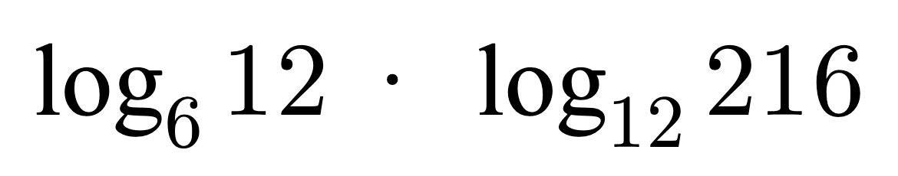
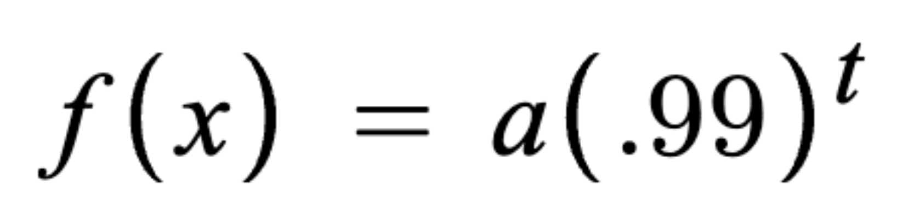

Simplify the following expression using the Change of Base Property.

Correct!
Incorrect
Part 2: Free Response
For a given sample of McDonald’s French Fries sitting on top of my refrigerator, it is found that the molecules break down at a rate of 1% per year. This is modelled by the exponential decay function:

with a being the initial # of molecules in the fries, which is extraneous to this problem. What is the half life of the fries, in years? (Meaning, how many years have to pass for there to be 50%, or ½, of the original number of remaining molecules, a, in the fries?) (round to nearest whole number)
(Hint: if you find yourself chuckling at the answer, it’s probably right)